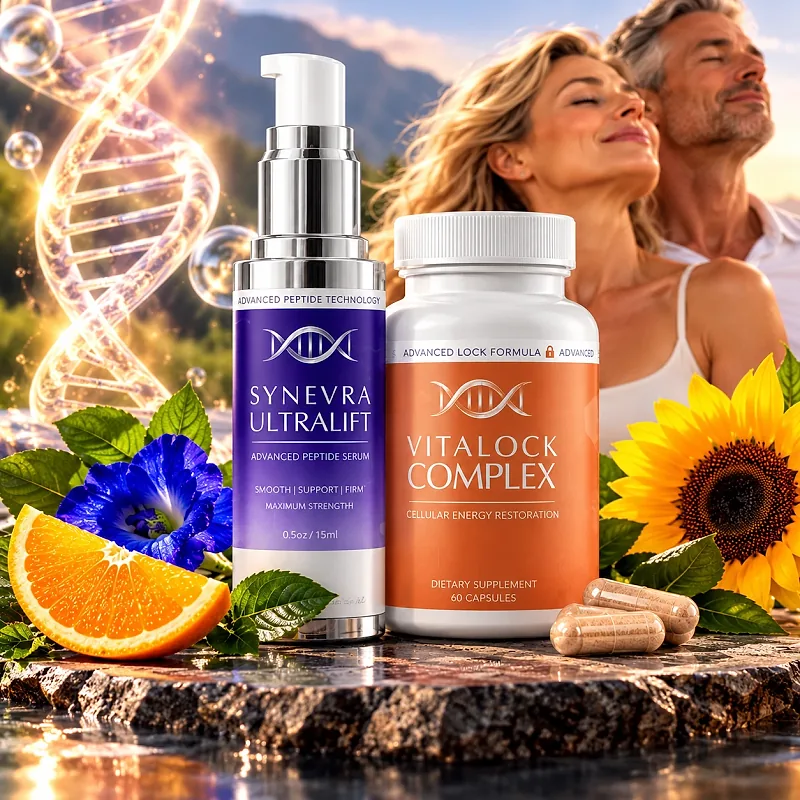
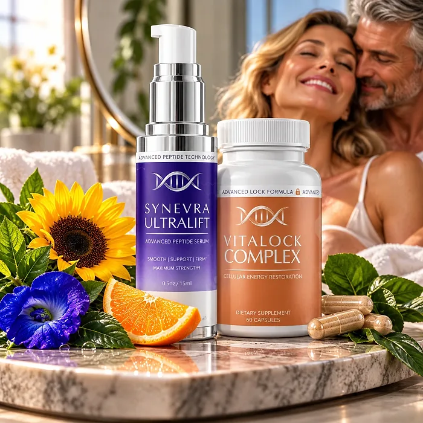
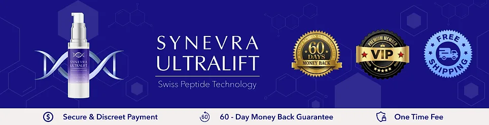

What Is Synevra And How Does It Work?
Synevra is a two-step skincare system designed to support smooth, firm, and radiant-looking skin for adults who want to address the fine lines, dullness, and loss of firmness that can build up with age, sun, and busy routines through a simple, dependable approach — without complicated routines or temporary quick fixes.
It combines the UltraLift Advanced Peptide Serum, applied to the skin, with the VitaLock Complex beauty supplement, taken as capsules, and together they deliver the SYN-AKE® dipeptide, sodium hyaluronate, and vitamins C and E in the serum, plus biotin, niacinamide, vitamin B6, zinc, and horsetail in the VitaLock capsules.
The official website calls it the Lift & Lock System, a Swiss-inspired beauty ritual that works both externally and internally, with ingredients studied by Swiss researchers and used in premium skincare worldwide, particularly for people who prefer one simple routine over a shelf full of products.
Rather than acting as a short-lived cosmetic fix, Synevra focuses on supporting the skin from the outside and the inside, working gradually alongside daily care to help maintain a smoother, more hydrated, and more even-looking complexion.
With consistent daily use, a system of this kind is intended to help with the appearance of expression lines, plumper-looking skin, and a brighter tone, especially when combined with daily sunscreen, enough water, good sleep, and a balanced diet.
From a practical standpoint, Synevra is a daily skincare ritual — a pump of serum and the capsules with a meal, with full instructions included in the package, according to the official FAQ.
Described by the official website as non-GMO, paraben-free, and cruelty-free, and handled in an FDA-registered and inspected facility, Synevra is designed for regular daily use, focusing on safety, purity, and quality for those seeking a simple, non-invasive route to radiant-looking skin.
Synevra Ingredients
The official website lists the key ingredients of the two products of Synevra, chosen to support smooth, hydrated, and radiant-looking skin as part of a consistent daily routine:
Dipeptide Complex (SYN-AKE®), in the serum: A synthetic peptide that helps smooth the appearance of expression lines.
Sodium Hyaluronate, in the serum: A form of hyaluronic acid that helps skin appear plump and hydrated.
Ascorbic Acid (Vitamin C) and Tocopheryl Acetate (Vitamin E), in the serum: Antioxidants that brighten and help protect the skin.
Glycerin, in the serum: A humectant that helps maintain skin moisture.
Biotin, Niacinamide, and Vitamin B6, in the VitaLock capsules: Vitamins that support healthy-looking hair, skin, and nails and the skin's natural radiance.
Zinc and Horsetail Extract, in the VitaLock capsules: A mineral and a traditional botanical that help maintain healthy-looking skin.
Together, these ingredients are designed to support a smoother, firmer, and more radiant appearance. The official website does not publish the full ingredient list or the Supplement Facts panel with the amounts, so the labels in the package are the reference to check.
Synevra is designed for daily use, offering a simple, non-invasive approach to skincare, without complicated routines.
Synevra Side Effects
Synevra is generally considered well tolerated and is designed for adults of different ages and skin types who are looking for a gentle, simple, and balanced approach to skincare, especially those who prefer a two-step daily ritual to support smooth, radiant-looking skin without resorting to harsh treatments with severe side effects.
The official website describes the serum as a gentle formula suitable for daily use, and the system as non-GMO, paraben-free, and cruelty-free, reinforcing consistency, safety, and reliability.
With no widespread reports of serious side effects, Synevra is generally considered a well-tolerated option. A few points deserve attention: the official FAQ recommends a patch test before using the serum, since vitamin C can cause mild tingling in sensitive skin; the serum should be kept away from the eyes; and biotin in the capsules can interfere with some laboratory blood tests, so it is worth telling your doctor you take it before any test. It is not intended to diagnose, treat, cure, or prevent any disease, and individual results may vary.
Pregnant or nursing women, people under 18, and anyone with a medical condition, a skin condition, or taking prescription medication should consult a physician or dermatologist before using Synevra, ensuring it fits safely within their personal care routine.
Synevra Dosage
According to the official FAQ, the way to use Synevra is simple: apply the serum as directed and take the VitaLock capsules with food, with full instructions included in the package. It is designed to fit easily into a morning or evening routine.
The UltraLift serum comes in a 0.5 oz (15 ml) pump bottle; serums of this kind are usually applied to clean, dry skin on the face and neck, before moisturizer. The VitaLock Complex comes in a bottle of 60 capsules, taken with a meal.
For best results, consistency is key. The official FAQ says many customers report noticing improvements in skin texture and appearance within a few weeks of consistent use, which is why many people make it part of an ongoing routine.
There is no need for complex schedules or multi-step routines. A simple daily ritual is designed to build results gradually alongside daily sunscreen, gentle cleansing, enough water, and good sleep.
As with any skincare product, it's important to follow the instructions in the package and to do a patch test first. Synevra works best when used regularly, combined with healthy daily habits.
Synevra – Refund Policy
You can order Synevra with confidence, knowing that every purchase is protected by a 60-day money-back guarantee counted from the day you receive the order. This allows you to try the system and decide if it delivers the results you expect.
According to the refund policy on the official website, all items can be returned within 60 days after they are received for a full refund minus any shipping fees, as long as all the items are sent back, in good physical condition. The return shipping cost is paid by the customer.
How the refund process works: Email support, then send all the items to the warehouse at Returns66, 11870 62nd St. N, Largo, FL 33773. The policy says it is fine to ship on the 59th day even if the package arrives a few days later. Once the return is received and inspected, you receive an email, and the refund is credited to your original payment method.
Customer Support Contact Information: support@synevra.com, as listed on the official website. Order questions can also be sent to BuyGoods, the retailer.
Refund Processing Time: According to the policy, the refund is processed within a few days after the package is received, and the time for the amount to appear depends on your bank.
This refund policy is designed to give customers a clear and transparent experience when trying Synevra.
Synevra Customer Reviews
-
Virginia R. — New YorkVerified Purchase – 6 Bottles
“I love how smooth my skin looks and feels. People keep asking what I'm doing differently!”
-
Jennifer M. — Los AngelesVerified Purchase – 6 Bottles
“My skin looks so much better. Even my dermatologist noticed the improvement!”
-
Carol W. — GeorgiaVerified Purchase – 6 Bottles
“At 61, I feel confident going out with minimal makeup. This has simplified my whole routine!”
Synevra – Where To Buy
Synevra is sold through its official website, so if you decide to try it, it's important to be careful about where you purchase it. The official website is the only sales channel the manufacturer lists, and it does not point to marketplaces such as Amazon, eBay, or Walmart.
Listings on third-party platforms may look similar but cannot be verified as authentic, raising concerns about safety, quality, and ingredient freshness. Products purchased outside the official source may not be covered by the 60-day guarantee.
For this reason, it makes sense to purchase Synevra only through the official website. Buying directly from the official source ensures you receive the authentic original product, made in the USA, with access to customer support and the full guarantee. According to the official website, every order is a one-time purchase, with no subscription or auto-ship, and orders are processed by BuyGoods, the retailer named on the site.
To avoid counterfeit batches and ensure maximum quality, always verify that you are ordering from the official Synevra website before completing your purchase.
To ensure you’re getting the authentic product, most users choose to visit the official website.
Is Synevra A Scam?
Based on what the official website discloses, Synevra does not appear to be a scam. It is a real skincare system, sold through an established retailer (BuyGoods), and formulated to support smooth, firm, and radiant-looking skin as part of a consistent routine.
The ingredients used in Synevra — the SYN-AKE® dipeptide, sodium hyaluronate, and vitamins C and E in the serum, plus biotin, niacinamide, vitamin B6, zinc, and horsetail in the VitaLock capsules — are well known in skincare and beauty nutrition, and the official website describes the role of each one.
In addition to its formula, Synevra is sold with a discreet one-time purchase that appears as "BuyGoods" on the statement, a support email, and a published return address in Largo, Florida, with a focus on clarity and simple returns.
The customers quoted on the official website describe smoother-looking skin, compliments, and a simpler routine. A fair point of criticism is that the website does not publish the full ingredient lists or the directions for use, and it mixes a topical serum with an oral supplement, so it is worth reading both labels. Results vary from person to person, and no skincare product replaces sun protection or the advice of a dermatologist.
Synevra is backed by a 60-day money-back guarantee, and orders are one-time purchases with no subscriptions or future payments. The return steps and the return address are published on the official website, which gives customers a clear path if the product does not meet their expectations.
If you're looking for a simple daily ritual to support smooth, radiant-looking skin without complicated routines, Synevra is worth considering — especially when purchased directly from the official website.
For those who want to verify product details or check current availability, the official Synevra website remains the safest option.

Check Availability On Official Website
